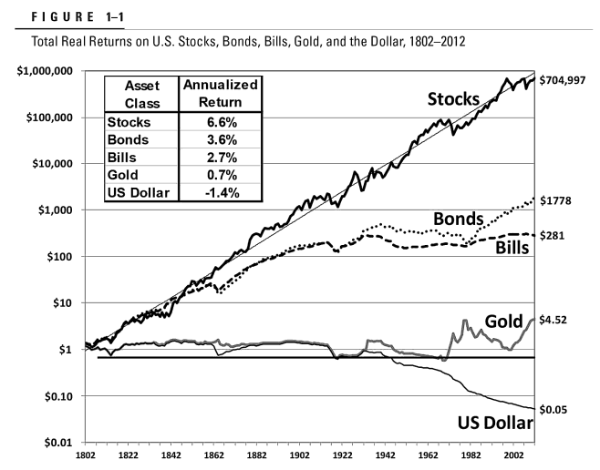

《長線獲利之道：散戶投資正典》：堅守長期投資策略
《長線獲利之道：散戶投資正典》是 Stocks for the Long Run 第五版。這本書不僅是在論述股票長期投資，你也可以再從中學習到許多經濟理論、金融與貨幣市場及美國經濟發展史等。

股票長期投資的報酬

《散戶投資正典》第一章就說明歷史以來的股票報酬。上圖表示了自 1802 年至 2012 年以來，美國股票、公債、國庫券以及美元的實質報酬。可以看出過去 210 年來，分散得宜的美國普通股投資組合，其複利實質年報酬率介於 6% 到 7% 之間，而且長期下來展現了驚人的一致性。
就短期而言，股票的風險高於固定收益資產，股票在短期也並非良好的通膨避險工具。然而，以長期來看，歷史已經證明，對以保障財富購買力為目標的長線投資人來說，股票還比債券安全。
長期投資指南
以下是《散戶投資正典》中所列出的原則，有助於投資人達成投資目標。
- 期望要符合歷史數據。從過去的數據來看，200 年來股市的報酬率在扣除通膨之後約為 6% 到 7%，賣出時的本益比約為 15 倍。
- 就股市報酬而言，長期會比短期更穩定。長期來說，股票和債券不同，當投資人面對的通膨率提高時，股票會予以補償。因此如果你的投資期間拉長，請把更高比例的資產配置到股票上。
- 將股票投資組合中的最大部位配置在低成本的股價指數基金上。
- 股票投資組合中至少要有三分之一是投資全球性的股票（目前的定義是指總部設於美國之外地區之企業的股票）。高成長國家的股票價格通常過高，能為投資人創造的報酬相對較低。
- 從歷史數據來看，比起成長型股票，價值型股票（本益比低、股利殖利率高）的報酬率更高、風險更低。買進被動追蹤指數的價值型股票投資組合，或者基本面加權指數基金，可以使你的投資組合偏向於價值型。
- 最後，要制定嚴謹的規則以確保投資組合走在正軌上，尤其是你發現自己屈服於當下的情緒時。如果你很容易對市場感到焦慮，坐下來，重讀本書的第一章。
總結
從我的觀點來看，這本《長線獲利之道：散戶投資正典》的地位就如同《漫步華爾街》般，列為投資必讀經典之作。好的投資策略，既是智慧的挑戰，也是心理的挑戰。在《長線獲利之道：散戶投資正典》中說明了，對於多數人而言，投資股票是長期累積財富的最佳策略。
本部落格所有文章除特別聲明外，均採用 CC BY-SA 4.0 協議 ，轉載請註明出處！